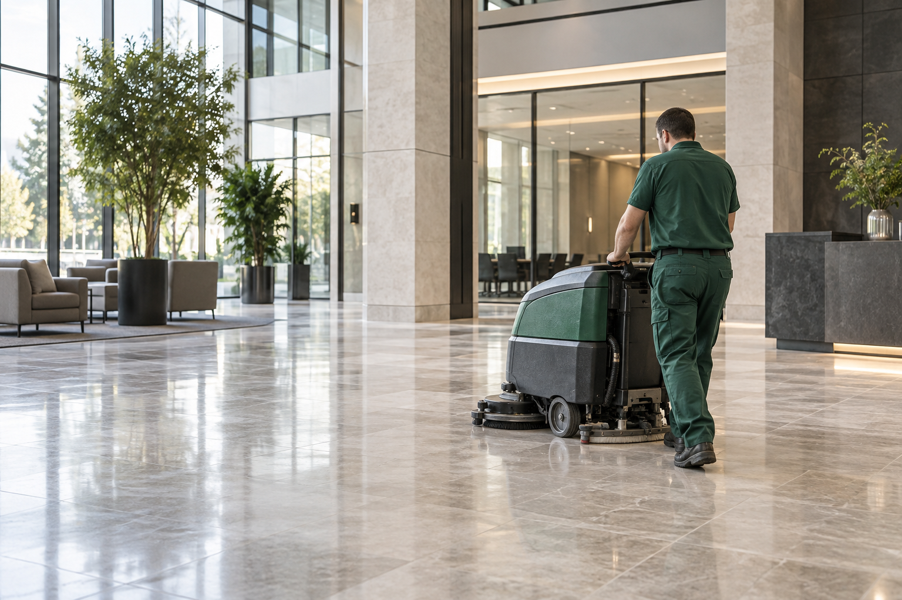

L’hygiène
de vos espaces.
Repérer les zones sensibles avant qu’une situation ne s’installe.
TRAITEMENT 5D & HYGIÈNE PROFESSIONNELLE
Les nuisibles peuvent fragiliser l’hygiène de vos locaux et la confiance de vos clients. À Tanger, Orezia vous aide à comprendre les risques, traiter leur cause et prévenir leur retour.
CE QUE VOUS CHERCHEZ À PRÉSERVER
Repérer les zones sensibles avant qu’une situation ne s’installe.
Organiser la réponse selon les contraintes de votre établissement.
Prendre en compte les lieux de travail, d’accueil et de vie.
COMPRENDRE / VOTRE ENVIRONNEMENT
Une cuisine, un entrepôt et un logement n’appellent pas la même réponse. Le point de départ, c’est votre réalité.
Zones de préparation, réserves, points d’eau et accès : le diagnostic permet d’identifier les facteurs qui favorisent la présence de nuisibles.
COMPRENDRE / LA RÉPONSE 5D
La nature du problème détermine le traitement. Les cinq expertises Orezia permettent d’adapter la réponse à votre environnement.
Une approche globale
de la maîtrise des nuisibles.
Détecter, prévenir et traiter les problématiques liées aux rats et souris.
Rats · SourisCibler les insectes rampants et volants selon l’espèce et le niveau d’infestation.
Cafards · Punaises de lit · FourmisTraiter les surfaces et environnements nécessitant une intervention d’hygiène adaptée.
Surfaces · Espaces sensiblesRechercher les sources d’odeurs persistantes pour définir une réponse appropriée.
Source · Traitement des odeursPrévenir et prendre en charge la présence indésirable de reptiles.
Prévention · Intervention adaptéeCOMPRENDRE / LA MÉTHODE OREZIA
Comprendre la cause, agir sur le problème, puis suivre son évolution : chaque étape prépare la suivante.
Une visite gratuite pour observer les lieux et identifier la problématique.
Les zones sensibles, les facteurs de risque et le niveau d’infestation sont évalués.
Un protocole est défini selon le nuisible, les locaux et les contraintes d’activité.
Les points critiques et l’évolution de la situation sont vérifiés après intervention.
Des recommandations et, si nécessaire, un programme périodique prolongent l’action.
Le bon protocole commence par un regard précis sur vos locaux.
Demander un diagnostic gratuit
COMPRENDRE / L’HYGIÈNE AU QUOTIDIEN
Le nettoyage complète la démarche de maîtrise des nuisibles. Orezia accompagne les professionnels dans l’entretien et l’hygiène de leurs espaces.
CHOISIR EN CONFIANCE / UNE INTERVENTION LISIBLE
Une intervention professionnelle s’appuie sur un diagnostic, un protocole adapté et des observations utiles pour la suite.
La réponse découle de la situation observée sur votre site.
Les interventions professionnelles peuvent être documentées pour conserver les observations et recommandations.
Les facteurs favorisant la présence des nuisibles sont pris en compte dans la prévention.
LA LOGIQUE DU SUIVI
Identifier les zones sensibles et les signes de présence.
Décrire les actions et le protocole retenu.
Conserver les constats utiles au suivi professionnel.
Formuler les recommandations et les prochaines étapes.
Schéma de la démarche Orezia.
NOS ENGAGEMENTS / PRODUITS & PRATIQUES
Nous utilisons des produits autorisés et agréés par l’ONSSA pour les usages concernés, dans le respect de leurs conditions d’emploi.
Nous nous inspirons des principes de santé et de sécurité au travail de la famille ISO 45000 pour guider nos pratiques : prévention des risques, protection des intervenants et amélioration continue.
CHOISIR EN CONFIANCE / LA BONNE FORMULE
Une action ciblée pour un problème identifié, ou un programme de suivi pour les environnements exposés à des risques récurrents.
Vous avez identifié un problème et souhaitez une réponse adaptée à la situation.
Votre établissement a besoin d’un suivi structuré dans la durée.
CHOISIR EN CONFIANCE / VOS QUESTIONS
Budget, nombre de passages, zone d’intervention : les réponses avant de commencer.
Poser une autre questionNon. Orezia propose une visite diagnostic gratuite afin d’évaluer les lieux et de déterminer la solution appropriée.
Le tarif dépend du type de nuisible, de la superficie, du niveau d’infestation, de l’environnement et du nombre d’interventions nécessaires. Le diagnostic permet d’établir une proposition adaptée.
Cela dépend du nuisible et du niveau d’infestation. Certaines situations nécessitent un contrôle ou plusieurs passages.
Orezia intervient principalement à Tanger et dans sa région et peut prendre en charge des missions ailleurs au Maroc selon leur nature.
Oui. Les professionnels constituent le cœur de l’offre Orezia, avec des interventions ponctuelles et des programmes périodiques de maîtrise et de suivi.
Oui. Les particuliers peuvent demander un diagnostic et une intervention adaptés à leur situation.
PASSER À L’ACTION / DIAGNOSTIC GRATUIT
Décrivez votre environnement et les signes observés. Une visite permet d’évaluer la situation avant de vous proposer une solution adaptée.
Tanger & région en priorité
Interventions partout au Maroc selon la mission.
Téléphone : 06 60 11 67 65
WhatsApp : 06 60 11 67 65
Email : contact@oreziagroup.com